Project 2: Vertical-Domain Supervised Fine-Tuning (Legal)¶
Abstract¶
P02 focuses on organizing regulatory texts, institutional documents, and legal task requirements into a trainable, auditable, and scalable vertical-domain supervised fine-tuning (SFT) data pipeline. The emphasis is not on single-instance question-answer generation, but on the stable transformation process from seed knowledge to supervised assets.
This chapter can be understood through four main threads:
- Seed knowledge processing: Extracting usable structured knowledge fragments from regulatory PDFs and institutional texts.
- Task taxonomy and sample synthesis: Decomposing distinct task layers — statute interpretation, legal Q&A, case analysis, and risk refusal.
- Quality control and preference augmentation: Stabilizing supervisory signals through quality assurance (QA), preference pairs, and risk-boundary samples.
- Training packaging and acceptance testing: Organizing processed data assets into finished, trainable, verifiable, and deliverable products.
Reading in engineering order, this chapter corresponds to a complete pipeline:
Raw regulatory PDF → Cleaning and chunking → Task design → Instruction synthesis → Preference augmentation → QA inspection → Training packaging → Acceptance testing
The core objective underlying this structure is to process legal knowledge into supervised data assets with task stratification, quality constraints, and acceptance mechanisms.
Keywords¶
Legal supervised fine-tuning (SFT); vertical-domain data; instruction taxonomy; compliance boundaries; annotation quality
Project Goals and Reader Takeaways¶
This project uses a "legal-domain expert SFT data factory" as its central case study, with the goal of transforming regulatory texts, case law, and legal Q&A materials into traceable domain-specific SFT training assets. Upon completing this chapter, readers should be able to identify the key data objects in this scenario, decompose the engineering pipeline, define acceptance criteria, and transfer the methodology to analogous data engineering tasks.
Scenario Constraints and Data Boundaries¶
The input is limited to publicly available or licensed legal texts; the project does not cover real legal consultation liability or production-grade case management systems. These boundaries make the case study reproducible and auditable. When the data scale, data sources, permission scope, or deployment environment change, the sampling strategy, quality thresholds, operational costs, and compliance requirements must be re-evaluated.
Architectural Decisions¶
This project follows an architectural path of "legal document parsing → task templates → sample generation → quality review → training split → risk annotation." This decision prioritizes clear input-output contracts, version traceability, anomaly localization, and result auditability, rather than compressing all logic into a single one-shot script run.
Sample Schema / Data Flow¶
The core data flow can be summarized as:
Listing P02-1 provides a process or path example to illustrate the input-output relationships, structural constraints, or execution patterns in this section.
Legal text/PDF → Document cleaning → Domain task schema → Instruction samples → Compliance and quality checks → SFT dataset
Listing P02-1: Process or path example
This excerpt serves to transform the above process into an inspectable, structured representation.
A sample schema should retain at minimum the fields id, source, content_or_payload, metadata, quality_signals, split_or_stage, and audit_trace; specific fields are further refined by the data types, downstream tasks, and acceptance methods of this project.
Core Implementation Excerpts¶
The main text retains only the key implementation excerpts that illustrate design trade-offs. Complete scripts, lengthy configurations, execution logs, and large files should be placed in the companion repository or appendix; code presentation focuses on input-output contracts, quality thresholds, exception handling, and acceptance interfaces.
Experimental or Acceptance Metrics¶
Acceptance metrics include task coverage, statute citation accuracy, sample format pass rate, manual spot-check pass rate, domain risk label completeness, and training split consistency. If the project enters production, coursework, or a public reproducibility environment, version numbers, dependency environments, random seeds, spot-check results, and failure sample post-mortems should also be recorded.
Cost, Risk, and Compliance Boundaries¶
Costs arise primarily from document parsing, sample generation, and expert review; risks concentrate in regulatory currency, citation mismatches, unauthorized texts, and misuse of legal advice. When external data, personal information, copyrighted content, or third-party services are involved, source documentation, permission status, de-identification strategies, invocation logs, and manual review records should be retained.
Common Failure Modes¶
Common failures include input distribution drift, missing schema fields, quality thresholds that are too loose or too strict, insufficient evaluation sample coverage, unstable model API calls, and non-traceable results. When debugging, prioritize locating data boundaries and intermediate artifacts before inspecting the model, toolchain, and deployment environment.
Reproducibility Resources¶
Reproducibility materials should include data source documentation, minimal samples, configuration files, run commands, metric scripts, inspection reports, and artifact directories. The main text retains necessary excerpts; complete notebooks, long scripts, and large files are maintained separately as companion resources. The training packaging for legal SFT can follow the general text-to-text data organization approach (Raffel et al. 2020); data loading, batch processing, experiment tracking, and quality gates can reference Hugging Face Datasets (Hugging Face 2026), Ray Data (Ray Project 2026), MLflow (MLflow Authors 2026), and Great Expectations (Great Expectations Contributors 2026), respectively.
1. Project Background: The Necessity of a Legal SFT Data Factory¶
General-purpose large language models already exhibit reasonably capable language expression in open-domain question answering, but the moment they enter legal scenarios, problems emerge rapidly.
The three most common forms of distortion are as follows.
The first is knowledge distortion. Models conflate similar statutory provisions, mix old law with new law, or present rules that apply only to specific subjects under specific conditions as general conclusions. In ordinary encyclopedic Q&A this may amount to no more than "not quite accurate enough," but in legal scenarios it directly affects users' judgment.
The second is task distortion. Many legal responses require more than "delivering a conclusion" — the model must also identify the issues in dispute within the facts, distinguish between facts and norms, specify conditions of applicability, and explicitly preserve boundary caveats under uncertainty. A model that can only recite statutory text is not the same as a model capable of providing compliant assistance.
The third is style distortion. Legal contexts impose strong requirements on expression style: the model must neither draw reckless conclusions nor deflect every question with "consult a professional lawyer"; it must be as clear and accessible as possible while retaining necessary expressions of caution. This is fundamentally a behavioral style problem jointly determined by SFT and preference alignment.
Accordingly, the goal of P02 is not simply to "generate some legal Q&A pairs," but to build a legal-domain SFT data factory — organizing regulatory texts, task taxonomies, quality controls, preference signals, and risk boundaries into a reusable production pipeline.
This pipeline serves not a one-time experiment, but a methodology:
When the team later needs to migrate from law to taxation, finance, healthcare, or customer service compliance, what can truly be reused is not some prompt, but this engineering method of transforming seed knowledge into supervised data.
2. Project Goals and Boundaries¶
2.1 Project Goals¶
This project focuses on the following four objectives.
Goal 1: Establish a transformation pipeline from legal-domain seed corpora to supervised data. Specifically, converting statutory provisions, institutional explanations, and related knowledge fragments from unstructured PDFs into structured samples suitable for training.
Goal 2: Establish a task taxonomy oriented toward legal scenarios. Rather than uniformly formatting all samples as "Q&A pairs," this project explicitly decomposes them into distinct task types — legal Q&A, statute interpretation, and case analysis — so that the model learns domain capabilities in different forms.
Goal 3: Establish an auditable, rejectable, and versionable quality assurance (QA) mechanism. Legal data without review is prone to batch-amplifying erroneous samples. Therefore, the project produces not only SFT samples but also preference pairs, review records, and risk refusal samples.
Goal 4: Produce data assets directly consumable by the training side.
Final outputs include not only raw intermediate artifacts but also training interface assets such as train.jsonl, val.jsonl, smoke_test.jsonl, and training_manifest.json.
2.2 Project Boundaries¶
To keep the project reproducible and clearly scoped, several explicit boundaries are defined.
1) Knowledge Source Boundary¶
The current scope focuses primarily on Chinese legal texts, mainly sourced from regulations and institutional documents rather than large-scale real user consultation records, full corpora of court judgments, or lawyers' working papers. This means the project is better suited as a methodological demonstration and factory prototype rather than a claim to cover all real-world legal questions.
2) Task Boundary¶
This project currently focuses on three task types:
- Legal Q&A (
legal_qa) - Statute interpretation (
statute_explanation) - Case analysis (
case_analysis)
These three task types are sufficient to cover the main path of "knowledge expression — normative interpretation — fact categorization," but do not yet extend to more complex tasks such as contract review, litigation strategy, retrieval-based citation, or multi-turn case assistance.
3) Supervision Method Boundary¶
Although preference pairs and review records are introduced, the project overall relies primarily on a hybrid approach of template-based teacher models + heuristic judges + human QA, rather than depending entirely on open-ended, line-by-line annotation by human legal experts.
4) Deployment Capability Boundary¶
Risk refusal samples and a risk register are included, but the sample volume remains small. This is appropriate for demonstrating how to introduce safety boundaries within a factory, and should not be overstated as "sufficient to support production deployment."
2.3 The Role of Boundary Definition¶
Clearly articulating boundaries is critically important. An engineering project typically unfolds in one of two ways:
- Writing the project as though it "can do everything"; or
- Writing the project as "what it can do reliably and under what conditions."
The latter is clearly more credible and more suitable for team reuse.
3. Project Positioning: P02's Location in the Capability Chain¶
If the entire book is viewed as a data engineering capability chain for large language models, P02 occupies a central position in the "instruction fine-tuning and preference data" segment.
Earlier chapters have already discussed general SFT data design, preference data and reward signals, annotation platforms, and QA methodology. The value of this chapter lies in pulling these methods back into a real industry scenario: law.
That is, this chapter does not revisit the general knowledge of SFT from scratch; rather, it demonstrates:
- What new problems arise in SFT data design within a highly specialized, high-risk, strongly compliant scenario;
- Why legal task decomposition cannot directly reuse general Q&A templates;
- Why QA must be moved upstream into the production process;
- Why SFT alone is insufficient, and why preference pairs and risk refusal samples must also be built;
- How to factor in version evolution, cost, and human-machine collaboration from the very start of the project.
In this sense, the most important question this chapter addresses is not a "technology component checklist," but a larger one:
How should an industry SFT data factory be designed as a sustained production capability rather than a one-time data synthesis script?
4. Overall Architecture: The Legal Data Pipeline from Regulatory PDFs to Training Assets¶
Figure P02-1 illustrates the corresponding workflow or structure.
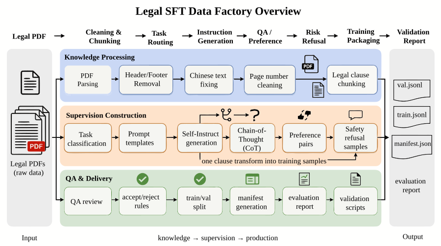
{kind=link}
From an engineering perspective, this project can be decomposed into three layers.
4.1 Layer 1: Knowledge Processing Layer¶
This layer addresses the question: "Do we have clean, controllable legal knowledge fragments?" It primarily includes:
- PDF parsing
- Header and footer trimming
- Chinese word-break repair
- Embedded page number removal
- Statutory text chunking and structuring
The objective at this stage is not to generate training samples, but to transform raw legal text into knowledge units suitable as supervisory seeds.
4.2 Layer 2: Supervision Construction Layer¶
This layer addresses: "How do we transform knowledge fragments into training samples of different types?" It primarily includes:
- Task type classification
- Prompt templates and instruction taxonomy design
- Self-Instruct synthesis
- Chain-of-thought (CoT) externalization
- Preference pair construction
- Risk refusal sample construction
This layer is the most critical part of the entire project, because it determines whether the model learns to "recite statutes" or to "work reliably across legal tasks."
4.3 Layer 3: Quality Inspection and Delivery Layer¶
This layer addresses: "Are these samples truly usable for training and deployment?" It primarily includes:
- QA review records
- Accept/reject rules
- Training splits
- Manifest generation
- Evaluation reports
- Project inspection scripts
Only at this stage does the project transition from a "data generation experiment" to an "engineering closed loop."
5. Engineering Prerequisites: Key Roles in the Legal Data Factory¶
Many teams, when first working on vertical-domain SFT, default to having a single algorithm engineer simultaneously handle knowledge organization, template authoring, quality review, and training set packaging. In legal scenarios, however, this role conflation tends to break down quickly.
A more reasonable division of responsibilities typically includes at least the following roles.
5.1 Domain Design and Knowledge Boundary¶
Responsible for defining task boundaries, determining sample types, mapping legal domain coverage, and identifying high-risk issues. This role does not necessarily require a practicing attorney, but at minimum must be able to distinguish which questions fall into "answerable knowledge Q&A" and which are approaching "individual legal opinions."
5.2 Data Processing and Structured Orchestration¶
Responsible for PDF parsing, cleaning rules, chunking logic, data schemas, intermediate artifact persistence, splitting, and inspection. This role is concerned with the stable production capability of data, not with how elegantly any single answer is written.
5.3 Generation Control and Task Orchestration¶
Responsible for Self-Instruct templates, task sampling, prompt orchestration, post-processing of results, batch API calls, and failure retries. It bridges "knowledge input" and "supervised sample output."
5.4 QA and Acceptance Closed Loop¶
Responsible for defining review protocols, spot-check rules, rework mechanisms, error labels, and escalation paths. In legal scenarios this role is especially critical, because the ultimate usability of the project depends not on how many samples the model generates, but on whether erroneous samples are identified and blocked from entering the pipeline.
5.5 The Purpose of Defining Key Roles¶
Many teams tackling industry SFT for the first time find themselves genuinely stuck not because they cannot write code, but because they have not decomposed the production process into roles and stages, leading to:
- No one defines task boundaries;
- No one takes responsibility for whether samples are correct;
- Rework rules never get implemented;
- Version updates are coordinated purely by word of mouth.
Clearly articulating role assignments is, in essence, a statement that industry SFT resembles a content production line rather than a single-point script.
Figure P02-2 illustrates the corresponding workflow or structure.
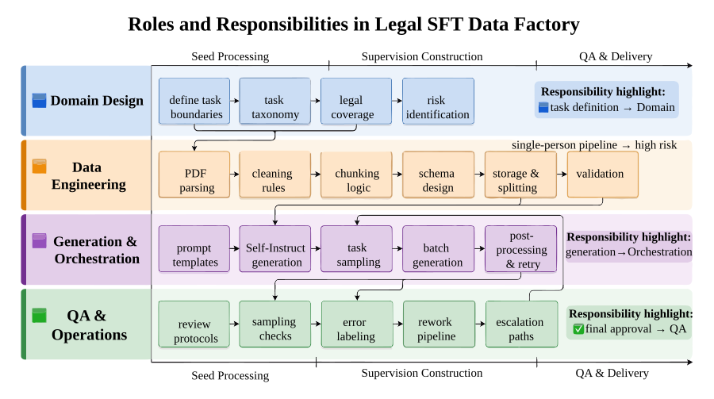
{kind=link}
6. Seed Data: The Seed Layer as the Starting Point for Supervision¶
In general Q&A, many teams directly scrape Q&A pairs from knowledge bases, web pages, or forums as training data. Legal scenarios are not suited to this approach.
The reason is straightforward: in legal Q&A, user-generated statements are often incomplete, and their sources are not necessarily authoritative. If open Q&A is used directly as training ground truth, the model learns large amounts of vague expression, unverified conclusions, and inconsistent style.
Therefore, this project begins with regulatory and institutional texts to build a relatively stable seed corpus. The value of this layer is not "covering all user questions," but providing a traceable, interpretable, and chunkable knowledge foundation.
6.1 Regulatory Text as the First Batch of Seeds¶
- The structure is relatively clear and well-suited to chunking;
- The authority is comparatively high, making it appropriate as a basis for supervision;
- It naturally supports statute interpretation, knowledge Q&A, and rule summarization;
- Quality control is more feasible at small project scale.
6.2 Limitations of Regulatory Text¶
If the data factory relies solely on regulatory text, two notable problems arise.
First, regulatory text is inherently biased toward "normative expression" and does not reflect how real users actually phrase their questions.
Second, regulatory text is better suited to supporting "interpretation" and "citation," but provides insufficient coverage of complex case analysis, ambiguous fact classification, and colloquial business-context expression.
Regulatory text is therefore appropriate as the first-layer seed, but should not be mistaken for the complete supervised dataset itself.
7. PDF Parsing and Intelligent Cleaning: Layout Cleansing of Legal Texts¶
One of the defining characteristics of legal and regulatory PDFs is that the content is highly rigorous, yet the layout is extremely unfriendly to machines.
Human readers tolerate headers, footers, page numbers, watermarks, paragraph line breaks, two-column layouts, and hyphenation without significant difficulty; for machines, however, all of these are noise sources that contaminate training samples.
7.1 Limitations of Plain Text Extraction¶
Many practitioners, when processing PDFs, simply use a tool that outputs a string and then feed that text directly into a chunker. This approach may barely suffice in general contexts, but it is highly problematic in legal scenarios.
When legal text is mis-parsed, two particularly harmful outcomes result:
- Originally separate statutory provisions are concatenated into a single sentence;
- The logical continuity of a statute is fragmented by page numbers, headers, and hyphenation.
This not only degrades sample readability, but also causes downstream Self-Instruct to generate supervised data that "looks plausible but originates from a corrupted source."
7.2 Component Selection¶
Table P02-1 summarizes the corresponding comparison and engineering considerations.
Table P02-1: Components and Selection Rationale
| Component | Choice | Function | Rationale |
|---|---|---|---|
| PDF parsing | pdfplumber |
Read page text and coordinates | Supports bounding-box-based header/footer trimming; well-suited for institutional PDFs |
| Cleaning logic | Regex |
Repair word breaks, remove page numbers, strip dirty characters | Many errors in legal PDFs are rule-based; regex is the most direct and controllable option at early stages |
| Generative model | DeepSeek-V3 |
Instruction synthesis and reasoning expansion | Balances reasoning quality and cost; suitable for large-scale synthesis |
| Orchestration logic | Python |
Batch processing, sampling, post-processing | Facilitates rapid construction of a minimal reproducible pipeline |
7.3 Trimming Headers and Footers¶
In legal PDFs, the most typical repetitive noise comes from headers and footers — for example, the regulation title repeating at the top of every page, and page numbers or publication information in the footer. If these are not removed during parsing, they are repeatedly ingested into training data as if they were body text.
Accordingly, this project crops approximately the top and bottom 5% of each page when reading, retaining only the central body region. The advantages of this approach are:
- More stable than post-extraction cleaning, because noise is reduced at the source;
- Broadly compatible with most regulatory PDFs;
- Simple to implement, making it a good minimal reproducible solution.
The corresponding implementation is as follows:
Listing P02-2 provides a Python implementation excerpt to illustrate the input-output relationships, structural constraints, or execution patterns in this section.
with pdfplumber.open(file_path) as pdf:
for page in pdf.pages:
width, height = page.width, page.height
bbox = (0, height * 0.05, width, height * 0.95)
page_crop = page.crop(bbox=bbox)
text = page_crop.extract_text()
Listing P02-2: Python implementation excerpt
This excerpt serves to transform the above process into an inspectable, structured representation.
7.4 Removing Embedded Page Numbers¶
More insidious than headers and footers are page numbers embedded within the body text, for example:
Listing P02-3 provides a process or path example to illustrate the input-output relationships, structural constraints, or execution patterns in this section.
Listing P02-3: Process or path example
This excerpt serves to transform the above process into an inspectable, structured representation.
A naive rule that simply "deletes dash-number-dash patterns" will readily misfire on legitimate numbering or list structures within the body text. Therefore, this project applies more carefully constrained regular expressions to enforce context boundaries around page numbers, deleting only fragments that more closely resemble standalone page-number blocks, without touching body-text numbering.
This type of cleaning looks like "glue code," yet it is often critically important in engineering, because it determines:
Whether we are performing fine-grained repair on legal text, or using blunt rules to destroy the statutes themselves.
7.5 Repairing Chinese Word Breaks¶
Another common problem in Chinese PDFs is "spurious spaces," for example:
Listing P02-4 provides a process or path example to illustrate the input-output relationships, structural constraints, or execution patterns in this section.
Listing P02-4: Process or path example
This excerpt serves to transform the above process into an inspectable, structured representation.
For humans this does not impede reading, but for models it disrupts tokenization statistics, degrades generation fluency, and reduces the usability of downstream samples. Accordingly, this project applies rule-based repair to anomalous spaces between adjacent Chinese characters, and handles consecutive word breaks through multiple substitution passes.
7.6 The Necessity of Fine-Grained Cleaning Control¶
The first step in industry SFT is never "figure out how to generate more data," but rather ensuring the seed layer is clean first. So long as seed texts contain extensive layout damage, all subsequent templates, CoT, preferences, and QA will operate on a contaminated foundation — and costs will only escalate from there.
Figure P02-3 illustrates the corresponding workflow or structure.
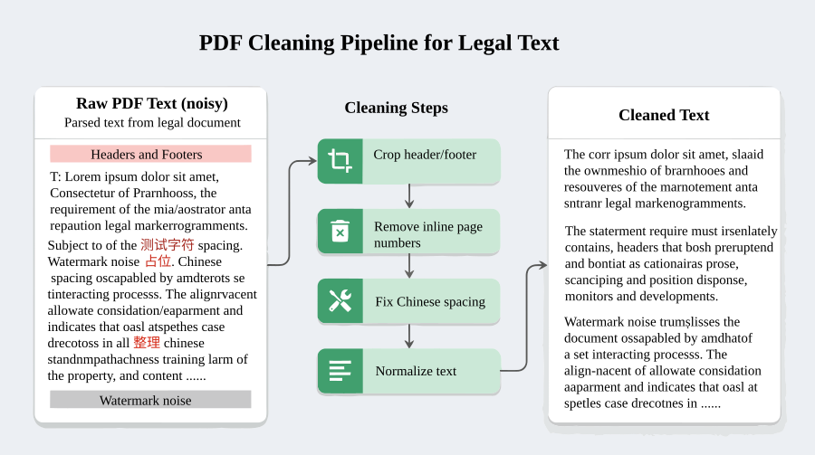
{kind=link}
Figure P02-4 illustrates the corresponding workflow or structure.
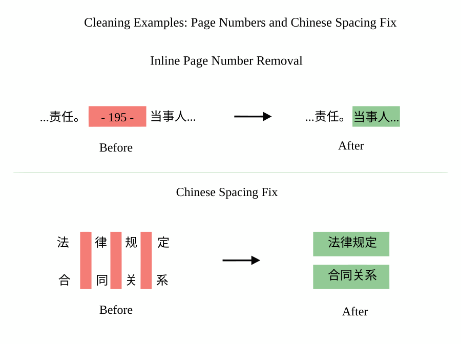
{kind=link}
8. Chunking and Schema: Structuring Legal Seeds¶
After completing the basic cleaning, the project does not feed long texts directly into the generative model; instead, it first performs chunking and structuring.
8.1 Chunking as a Necessary Step¶
A regulatory or institutional text is often very long. Feeding it directly to a model creates three problems:
- Overly long context is costly and introduces noise;
- Different statutory provisions cover mixed topics, making them unsuitable as single supervisory units;
- Subsequent tracing of sample provenance is difficult, impeding QA and retrospective analysis.
A more appropriate approach is therefore to chunk by statutory article, provision paragraph, or relatively self-contained knowledge fragment, turning each chunk into a traceable seed sample.
8.2 What the Schema Solves Here¶
A schema is not there for aesthetics; it exists so that all downstream stages can operate on unified fields. A typical legal seed sample should contain at minimum:
id: Unique identifiersource_name: Name of the source regulation or institutional documentarticle_no: Article number or chapter positiontext: Cleaned body fragmenttask_type: Which task type it will be expanded intorisk_level: Whether it belongs to a high-risk topicmetadata: Version, cleaning log, parse source, and other supplementary information
With this schema layer in place, the project can subsequently:
- Trace which statute a given supervised sample originated from;
- Compare sample distributions across different sources;
- Route high-risk samples into a dedicated stream;
- Trace back upstream seeds when problems are found in the training set.
8.3 Schema as the Foundation of the Seed Layer¶
Many data projects fail not because the model is poor, but because no unified field structure was established from the start, leading to situations where:
- QA cannot verify provenance;
- Preference pairs cannot be linked to their primary samples;
- Train/val splits cannot be isolated by source;
- Version rollbacks have no starting point.
The schema is the foundation of an industry SFT factory, not an accessory.
Figure P02-5 illustrates the corresponding workflow or structure.
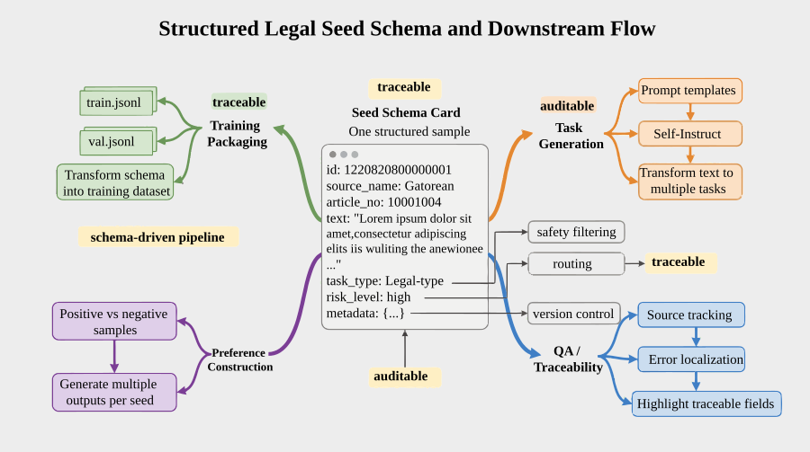
{kind=link}
9. Task Taxonomy: Task Stratification in Legal SFT¶
If a team were to build a legal SFT dataset by intuition, the data they most naturally produce would tend to look like this (XXX denotes a template slot filled in with specific article numbers):
Instruction: Please explain Article XXX of the Civil Code. Output: This article stipulates that……
Such samples certainly have value, but if the entire dataset looks like this, the model will ultimately become nothing more than a "statute recitation engine."
What legal scenarios truly require is not just recitation of normative text, but stable performance across different task forms. Accordingly, this project decomposes supervisory tasks into at least three major categories.
9.1 Legal Q&A (legal_qa)¶
This task type targets scenarios closer to real user queries, with an emphasis on:
- Translating normative expression into questions users can understand;
- Providing answers in relatively clear natural language;
- Including conditional qualifications and boundary caveats where necessary.
This task type trains the model's "user interface capability."
9.2 Statute Interpretation (statute_explanation)¶
This task type targets statutory comprehension and normative exegesis, with an emphasis on:
- Restoring the meaning of a provision;
- Explaining conditions of applicability;
- Distinguishing key concepts;
- Noting, where necessary, situations the provision does not directly cover.
This task type trains the model's "normative expression capability."
9.3 Case Analysis (case_analysis)¶
This is the task type most closely aligned with legal reasoning, with an emphasis on:
- Extracting issues in dispute from the facts;
- Assessing how relevant statutory provisions might apply;
- Articulating the conditions under which a conclusion holds and the associated uncertainties;
- Avoiding definitive conclusions when the facts are insufficient.
This task type trains the model's "fact-to-rule mapping capability."
9.4 The Quality Control Role of Task Decomposition¶
Task decomposition is not intended to make a table look more impressive; it is designed to avoid a very common problem:
The sample set looks large, but in practice all samples are training the same capability over and over.
In the legal domain, this problem of "superficially diverse but substantively uniform" samples is especially pronounced. Only by explicitly distinguishing Q&A, interpretation, and analysis capabilities does the model have a chance to learn a more complete behavioral distribution.
Figure P02-6 illustrates the corresponding workflow or structure.
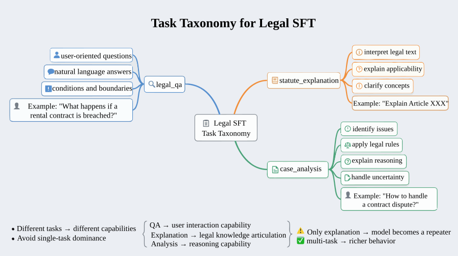
{kind=link}
10. Task Distribution and Sample Structure: Controlling Distribution Balance¶
Once the task taxonomy is established, the next question is not "can we generate samples," but "is the distribution of generated samples healthy."
In the example artifact statistics for this chapter, each of the three primary task types contains 2,577 samples, illustrating the acceptance criterion for relatively balanced task structure. The final training set contains 7,737 samples, indicating that the pipeline can expand from regulatory seeds into a more complete supervised data asset. At the same time, legal source distribution is not balanced: Civil Code–related samples number 3,882; Criminal Law, 1,710; and Company Law, 855 — significant concentration remains in cross-domain coverage. If these figures are used in a formal deliverable, they should be archived together with the data manifest, generation script version, and sampling log.
This set of figures communicates at least three things:
First, the project has moved beyond "randomly producing some samples" and has formed a relatively well-defined task structure.
Second, the factory has developed the capability to expand from seeds into multi-task supervised samples.
Third, legal domain coverage remains one of the highest-priority areas for optimization in the next phase.
10.1 Task Balance and Source Distribution¶
Viewed purely by task type, the three sample categories are indeed balanced. But looking further at provenance, it becomes apparent that samples are concentrated in a small number of legal domains. This means the model, while learning relatively evenly across "task forms," may still be skewed toward certain areas in "knowledge distribution."
10.2 The Importance of Sample Structure¶
A total sample count can only answer "how large is the scale," not "toward what will the model be biased." In industry data engineering, distributional structure is often more important than absolute volume.
Figure P02-7 illustrates the corresponding workflow or structure.
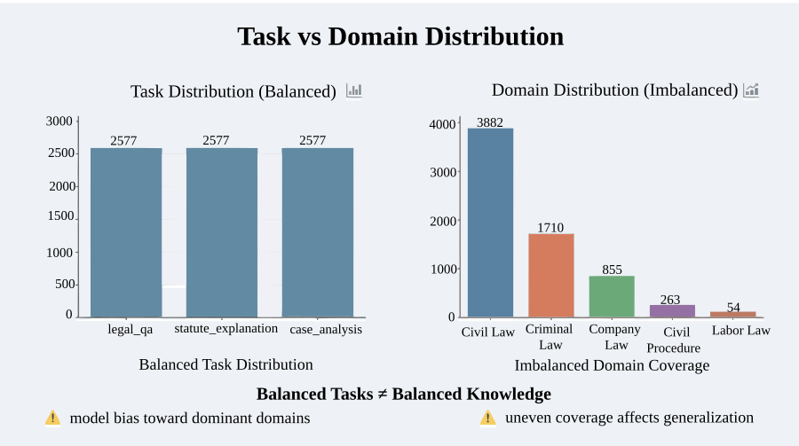
{kind=link}
11. Self-Instruct: The Necessity of Controlled Synthesis¶
The single most critical step between regulatory seeds and SFT samples is synthesis expansion. Rather than having humans author all legal Q&A pairs line by line, the project adopts a Self-Instruct approach: a teacher model automatically generates candidate samples based on statutory provisions and task templates.
11.1 The Role of Synthesis Expansion¶
If the project relied entirely on human authorship, costs would quickly spiral out of control. In the example estimation for this chapter, manual review labor is illustrated at approximately 193.28 hours and review cost at approximately 23,193.6 CNY as a demonstration of cost accounting methodology; formal deliverables should replace these illustrative values with actual review records, unit-cost assumptions, and sampling logs. If all primary samples were also hand-authored, overall investment would be substantially higher. Using a teacher model to auto-expand first, then concentrating human effort on review and hard cases, is the more practical approach.
11.2 Constraints on Legal Synthesis¶
In general Q&A, a generative model can write relatively open-ended natural language answers; in legal contexts, the greater the freedom granted, the higher the risk. The model can easily:
- Splice irrelevant provisions into an answer that appears correct;
- Fill in conclusions based on common sense without any actual basis;
- Confidently output "what should be done" recommendations;
- Produce definitive answers on boundary questions without preserving uncertainty caveats.
Accordingly, this project uses template-constrained synthesis rather than fully open-ended generation. The teacher model's degrees of freedom are bounded by the task templates and format requirements.
11.3 Weighted Roulette and Task Sampling¶
To ensure the data distribution meets expectations, the project does not sample the three task types with simple uniform randomness; instead, it uses a weighted roulette mechanism. The core logic is:
- Complex case analysis tasks train the model's high-value reasoning capability most effectively and are therefore assigned higher weight;
- Tasks such as legal document drafting or concept disambiguation are also important, but do not need to dominate the sample quota at the current stage;
- Task allocation ratios should be an explicitly adjustable engineering parameter, not a black box hidden inside a random-number generator.
The value of this approach is that it turns "data distribution" into a controllable object rather than a post hoc statistical outcome.
Figure P02-8 illustrates the corresponding workflow or structure.
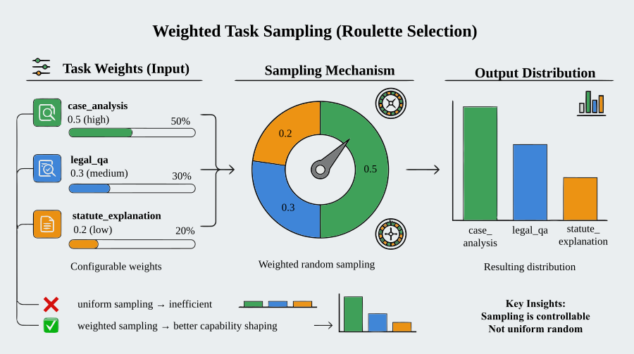
{kind=link}
12. Chain-of-Thought (CoT) Externalization: Expression Constraints for Legal Reasoning¶
Many teams working on legal SFT mistake "expert feel" for "long, formal answers." What actually makes a model behave more like a legal assistant is typically not length, but rather whether the reasoning process is visible, whether conclusions are structured, and whether boundaries are expressed.
12.1 The Role of Explicit Chain-of-Thought¶
Case analysis tasks are especially dependent on intermediate reasoning. If training data retains only the final conclusion, the model tends to learn how to produce an output without learning how to:
- First identify the issues in dispute;
- Then assess the applicable norms;
- Then deliver a conditional conclusion;
- Finally flag sources of uncertainty.
Accordingly, the project's post-processing pipeline externalizes the "reasoning process" fields within model outputs as much as possible, then concatenates them into a unified Markdown or section-divided format. The purpose is not to make the model "look like it is thinking," but to provide the training process with a more complete behavioral template.
12.2 Usage Boundaries of Legal CoT¶
CoT in legal scenarios also cannot be allowed to expand without limit. Reasoning that is excessively long, granular, and resembling an internal deliberation log is not necessarily appropriate as a final user-facing response. A more practical approach is to constrain CoT to the "structured reasoning" level, for example:
- Extract the issues in dispute
- Cross-reference the applicable rules
- Analyze conditions of applicability
- State the conclusion and its boundaries
This format preserves the reasoning path without turning the sample into an unwieldy monologue.
12.3 The Engineering Value of CoT¶
Within this project, CoT value is reflected primarily in two respects:
- It helps the model learn an expression order more closely resembling legal analysis;
- It provides QA reviewers with clearer intermediate evidence, making it easier to identify samples where "the conclusion is right but the reasoning is wrong."
Figure P02-9 illustrates the corresponding workflow or structure.
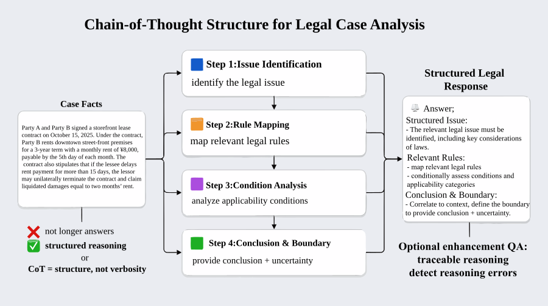
{kind=link}
13. Preference Pairs and Review Records: Multi-Layer Supervisory Signals¶
SFT samples alone can only tell the model "what constitutes an acceptable answer"; in legal contexts, this is not sufficient. Many responses are not simply "right" or "wrong," but differ along dimensions of style, risk management, boundary control, and expressive caution.
This is precisely where preference pairs become important.
13.1 The Role of Preference Pairs in Legal Scenarios¶
They address situations such as:
- Two responses are both basically correct, but one is more restrained, clearer, and less prone to asserting definitive conclusions;
- Two responses both cite rules, but one better explains the conditions of applicability;
- Two responses both offer guidance, but one better distinguishes between informational explanation and legal opinion.
These distinctions are difficult to express with a single label, and preference pairs are well-suited to expressing "which one is better."
13.2 Preference Signal Development in the Current Project¶
The project's existing artifacts show 7,731 preference pairs, running roughly in parallel with the accepted primary SFT sample count. This indicates that the factory does not build preference signals as an afterthought once primary SFT is complete, but treats them from the outset as an asset to be developed in parallel with primary supervision.
13.3 The Role of Review Records¶
Many teams, after completing QA, retain only the "accepted" samples and discard the review records. This causes two problems:
- No one subsequently knows why a particular sample was accepted or rejected;
- Failed samples cannot be recycled to improve templates in reverse.
Accordingly, this project includes review records as part of its artifacts. The benefits are:
- Sample quality history is traceable;
- Second-round arbitration is supported;
- Error patterns can be extracted from rejection reasons;
- Evidence for the next round of template optimization is available.
Figure P02-10 illustrates the corresponding workflow or structure.
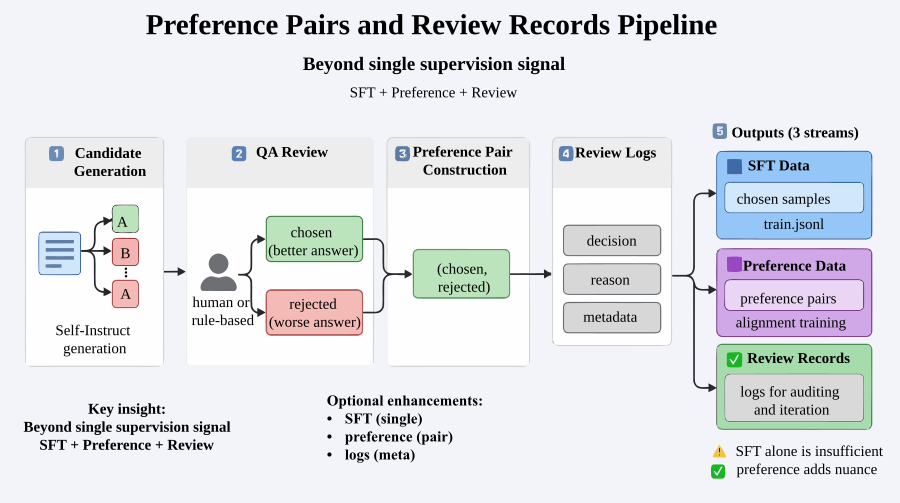
{kind=link}
14. Risk Refusal: Boundary Control Data¶
Legal contexts represent a quintessential high-risk scenario. A model should not simply "answer as much as possible," but must know when it should decline, hand off to a human, or preserve boundary caveats.
14.1 The Relationship Between Risk Refusal and System Prompts¶
Many teams think, before deployment: "The system prompt already says 'do not provide specific legal opinions,' so that should be enough." In practice, it is far from sufficient.
The behavioral patterns a model truly learns come first and foremost from its training data. If the training set is filled with:
- Reaching direct conclusions in individual cases;
- Providing definitive recommendations when evidence is insufficient;
- Outputting highly operational responses to high-sensitivity questions;
then a system prompt at inference time will often fail to reliably suppress these behaviors.
14.2 The Role of Risk Refusal Samples¶
Risk refusal samples are, in essence, behavioral exemplars that teach the model "how to safely not answer." For example:
- Explicitly stating that information is insufficient;
- Reminding the user to consider specific facts and evidence;
- Distinguishing general legal information from individual case opinions;
- Recommending further judgment by a qualified professional.
14.3 Risk Boundary Development in the Current Project¶
The existing artifacts contain 6 risk refusal samples and 6 risk register entries. While this quantity is small, it conveys an important signal: the project has already transformed risk boundaries from "verbal reminders" into explicit data assets.
Figure P02-11 illustrates the corresponding workflow or structure.
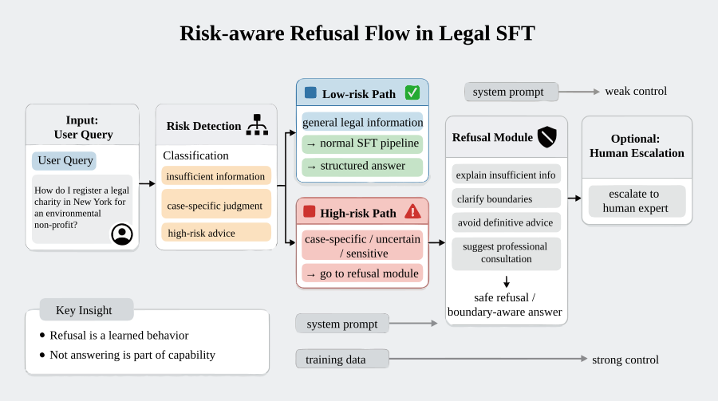
{kind=link}
15. QA Protocol: The Quality Gate for Legal Data¶
The most underestimated stage in industry SFT is QA. Teams frequently concentrate most of their effort on "how to generate more samples," overlooking the fact that what truly determines deployment quality is "how to block bad samples."
In legal contexts, a competent QA protocol must answer at least three questions:
- What kinds of samples should be accepted?
- What kinds of samples must be rejected?
- When problems are found, how is rework handled — rather than performing a single one-time cleanup?
15.1 Review Dimensions¶
Review dimensions can be decomposed into five items:
- Correctness: Is the conclusion consistent with the seed regulation and task intent?
- Completeness: Are key conditions, exceptions, or applicability prerequisites missing?
- Expressive clarity: Can the response be understood by non-specialist users?
- Format consistency: Does it conform to the specified output template?
- Risk boundary: Does it cross the line into individualized, assertive, or highly sensitive recommendations?
15.2 Accept, Revise, and Reject Rules¶
An actionable QA protocol should not have only two states — "pass/fail." A more practical design includes at least:
- Accept: Can proceed directly into the training set;
- Revise: Substance is correct, but expression, format, or boundary handling is inadequate; rework required;
- Reject: Factual or normative errors, excessive risk, or task mismatch; does not enter training assets.
15.3 Error Labeling¶
It is recommended to attach error labels to rejected samples within QA records, such as:
- Citation error
- Conclusion out of bounds
- Missing condition
- Inappropriate style
- Task mismatch
- Facts insufficient but answer still asserted
15.4 The Necessity of a QA Protocol¶
Without documenting QA protocols alongside generation logic, industry SFT degrades from a "data factory methodology" into a mere "description of data generation steps."
Figure P02-12 illustrates the corresponding workflow or structure.
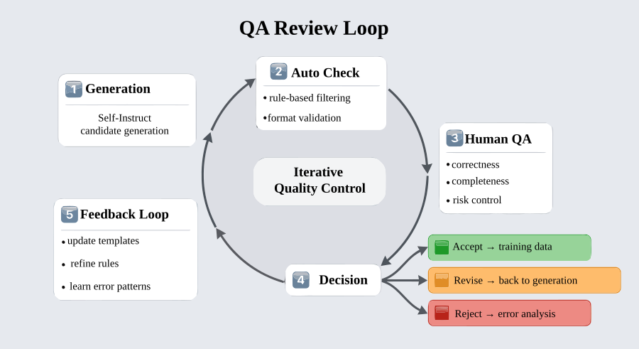
{kind=link}
Figure P02-13 illustrates the corresponding workflow or structure.
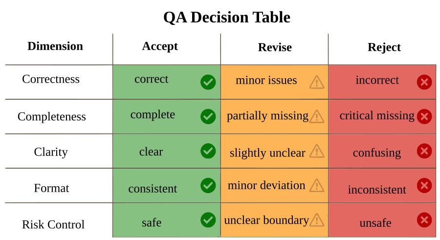
{kind=link}
16. Vendor Collaboration and Human-Machine Division of Labor: Review Mechanisms at Scale¶
In small-scale experiments, team members can still handle most review work themselves. But once the project enters continuous iteration, the cost of manual review quickly becomes the primary bottleneck.
Using the example figures in this chapter, manual review labor is estimated at approximately 193.28 hours and review cost at approximately 23,193.6 CNY. These figures are intended to illustrate the cost accounting methodology; if published as actual project results, they must be supplemented with review records, sample IDs, rate assumptions, and reviewer sign-off. Without a more rational tiered review and vendor collaboration mechanism, costs will rapidly spiral as volume grows.
16.1 Tiered Review¶
Not all samples require the same level of human intervention. A more rational design typically involves:
- Low-risk, rule-clear samples proceeding through automated pre-review first;
- Medium-risk samples reviewed by annotators or domain operators;
- High-risk or disputed samples escalating to senior personnel or expert arbitration.
16.2 Risk Points in Vendor Collaboration¶
Once external annotation or review resources are introduced, teams most commonly fall into two traps:
- Providing only "what to do" without explaining "why it should be done this way";
- Providing only standards, without counter-examples and boundary illustrations.
This is especially true in legal contexts. A simple guideline asking reviewers to "judge whether an answer is correct" is far from adequate. Reviewers need to see:
- Which answers are still sent back for revision despite being basically correct — because they are too assertive;
- Which answers are too conservative, but are also unacceptable for being excessively so;
- Which questions trigger risk refusal rather than continued supplementation.
16.3 The Engineering Position of the Collaboration Mechanism¶
The word "factory" in "data factory" must ultimately be grounded in a collaboration mechanism. Documenting only models, templates, and scripts — without documenting people and process — makes it very difficult to achieve real-world team implementation.
Figure P02-14 illustrates the corresponding workflow or structure.
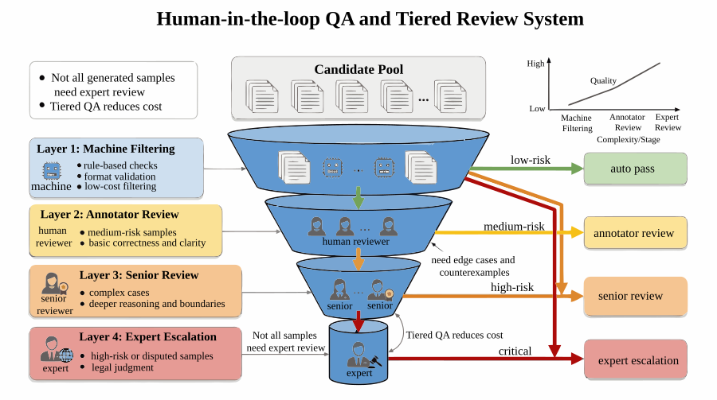
{kind=link}
17. Training Packaging: From Supervised Samples to Training Interfaces¶
After generation, review, and preference construction are complete, the data factory must also package these artifacts into interfaces directly consumable by the training side.
17.1 Training Packaging as a Distinct Phase¶
Many projects end once samples are produced, only to discover when training actually begins that:
- Fields are inconsistent and cannot be read by the training script;
- Train/val splits are unstable;
- Smoke tests are not representative of actual sample format;
- Reports, metrics, and data files do not align with each other.
Training packaging is therefore not simply exporting a JSONL file; it requires ensuring:
- All primary fields are complete;
- Train/val splits are reproducible;
- The manifest accurately describes data scope and version;
- Smoke tests can quickly surface interface issues.
17.2 Primary Training Artifacts in This Project¶
final_sft_dataset.jsonltrain.jsonlval.jsonlsmoke_test.jsonltraining_manifest.json
17.3 The Role of Smoke Tests¶
The value of a smoke test is not to evaluate model performance, but to surface obvious problems in the training pipeline as early as possible — such as missing fields, encoding errors, inconsistent sample formats, or mismatches between reading logic and the manifest.
Figure P02-15 illustrates the corresponding workflow or structure.
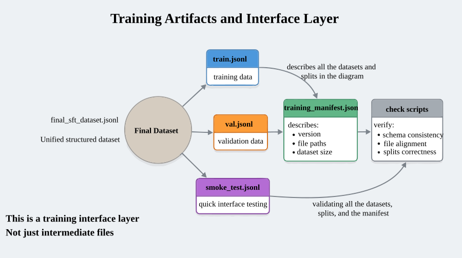
{kind=link}
18. Results Overview: Example Project Output Summary¶
Based on the example artifacts, P02 can form a comparatively complete set of legal-domain supervised assets, with the downstream lightweight validation demonstrating how supervisory signals are verified. If these figures are presented as actual project results, they must be correlated item by item with training_manifest.json, generation script version, random seed, sample IDs, and scoring records.
18.1 Sample Scale¶
- Number of seed statutes:
2,577 - High-quality SFT samples generated via template teacher:
7,731 - Low-quality contrast samples filtered or constructed via heuristic judge:
7,731 - Number of preference pairs:
7,731 - Final training set size:
7,737
This demonstrates that the example pipeline can expand from raw regulatory seeds into a structurally complete set of supervised assets, rather than remaining at the level of a handful of hand-crafted samples or a one-shot script demonstration.
18.2 Task Distribution¶
The three primary task types remain fully aligned:
legal_qa = 2,577statute_explanation = 2,577case_analysis = 2,577
This distribution indicates that the project has strong allocation control at the task level, with no single task type disproportionately dominating the sample space.
18.3 Source Distribution¶
The current legal source distribution is:
- Civil Code of the People's Republic of China =
3,882 - Criminal Law of the People's Republic of China =
1,710 - Civil Procedure Law of the People's Republic of China =
951 - Company Law of the People's Republic of China =
855 - Labor Law of the People's Republic of China =
333
This demonstrates that the project has developed cross-domain expansion capability, but coverage across legal domains remains uneven, with Civil Code–related samples accounting for a notably higher proportion.
18.4 Preference and Risk Data¶
- QA review records:
7,731 - High-risk refusal samples:
6 - Average QA score:
5.0
This shows that the project is not building only primary SFT data, but concurrently constructing auxiliary supervisory layers related to QA, preferences, and risk boundaries. For industry SFT, this is often more important than simply increasing total sample count.
18.5 Training and Delivery Layer Artifacts¶
- Training set split:
train = 6,947,val = 790,smoke = 24 training_manifest.jsonpackaging complete- Project inspection pipeline passes; training-side and report-side artifacts are mutually consistent
This indicates that the project's output is not merely "a collection of JSONL files," but a set of assets directly consumable by the training side and consistently verifiable by inspection scripts.
Figure P02-16 illustrates the corresponding workflow or structure.
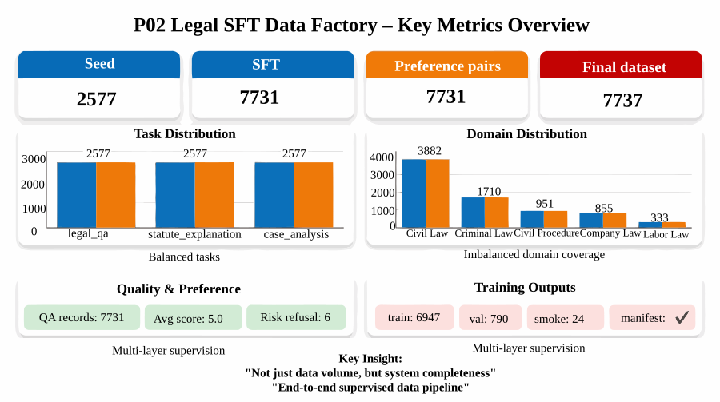
{kind=link}
19. Lightweight Downstream Validation: Minimal Validation Design¶
In prior versions, P02 was able to demonstrate "the data factory validated." But merely proving the pipeline exists is insufficient; what matters more is answering the following question:
Do these data — processed through QA, preference construction, and risk governance — actually outperform unprocessed or low-quality candidates?
The newly added lightweight downstream validation is designed precisely to address this question.
19.1 Validation Design¶
The example validation randomly samples 50 paired samples under a fixed random seed (seed = 20260409) and performs lightweight quality validation on both chosen and rejected categories. The goal here is not to pursue a comprehensive model benchmark, but to answer in a cost-controlled and reproducible manner whether preferences and QA have genuinely widened the quality gap. For formal publication or delivery, the sampling script, sample ID list, and scoring results should be retained.
This validation approach is appropriate for the project's current goals. The focus here is on data engineering methodology, not a complete downstream model paper. A good downstream validation need not be heavy at the outset, but it must meet at least three requirements:
- Reproducible;
- Interpretable;
- Directly aligned with the key design assumptions stated earlier.
19.2 Validation Metrics¶
In this example 50-sample draw, the project uses several highly representative metrics:
- Average quality score for
chosen - Average quality score for
rejected - Pairwise win rate
- Statute citation coverage rate
- Unsafe shortcut expression rate
The strength of these metrics is that they are not purely abstract scores, but are directly tied to the real goals of legal SFT:
- Quality score reflects overall acceptability;
- Pairwise win rate reflects whether preference construction genuinely distinguishes good from bad responses;
- Statute citation coverage rate reflects whether responses retain legal grounding;
- Unsafe shortcut expression rate reflects whether high-risk, assertive expressions are effectively suppressed.
19.3 Validation Results¶
From the current results:
- Average quality score for
chosen:5.0 / 5 - Average quality score for
rejected:1.0 / 5 - Pairwise win rate:
100.00% - Statute citation coverage rate:
chosen = 100.00%,rejected = 0.00% - Unsafe shortcut expression rate:
chosen = 0.00%,rejected = 100.00%
These figures come from the example lightweight sample draw; formal publication should be accompanied by the sampling script and scoring details. In the pedagogical context, they indicate:
First, the current preference construction and QA mechanisms are not merely "going through the motions of review," but have genuinely separated high-quality samples from low-quality ones.
Second, the two objectives most critical to legal contexts — preserving statutory grounding and avoiding assertive shortcut expressions — show marked differences between chosen and rejected.
Third, P02's supervisory design is beginning to exhibit a very important engineering property: it does not merely produce samples, but can provide initial evidence for why those samples deserve to enter the training set.
19.4 The Distinction Between Lightweight Validation and Heavy Benchmarking¶
It must be emphasized that the downstream validation here remains lightweight validation — not a comprehensive training benchmark and not an ablation study in the style of a research paper. Its value lies not in replacing large-scale evaluation, but in adding the piece that was previously most absent from this chapter:
Moving from "the data structure is reasonable" further toward "there is preliminary evidence that the data is effective."
This step is already very significant. Many data engineering projects fail precisely because they describe only the construction pipeline without any posterior validation, making it ultimately impossible to judge whether the resulting data is actually effective.
19.5 Engineering Implications of These Results¶
This lightweight validation delivers at least three engineering-level signals.
First, it demonstrates that preference pairs and QA records are worth keeping — they are not optional accessories. They not only help filter samples but also provide clearer behavioral boundaries for subsequent training.
Second, it demonstrates that the design decision to "make statutory grounding explicit" is effective. chosen samples achieve 100% statute citation coverage while rejected samples score 0%, indicating that the current templates and inspection mechanisms can significantly drive model outputs to resemble genuine legal explanations rather than vague generalities.
Third, it demonstrates that "making safety boundaries explicit" is beginning to take effect. The unsafe shortcut expression rate is 0% for chosen and 100% for rejected, meaning the project is now capable of proactively suppressing high-risk expression at the data level, rather than leaving this responsibility entirely to the system prompt at inference time.
19.6 How to Interpret This Type of Experiment¶
The emphasis in this type of experiment is not on claiming some extreme result, but on demonstrating three things:
- A minimal reproducible downstream validation has been added;
- It directly validates the key design assumptions presented earlier;
- It provides direction for subsequent, more rigorous training experiments, rather than attempting to resolve all evaluation problems in one pass.
Figure P02-17 illustrates the corresponding workflow or structure.
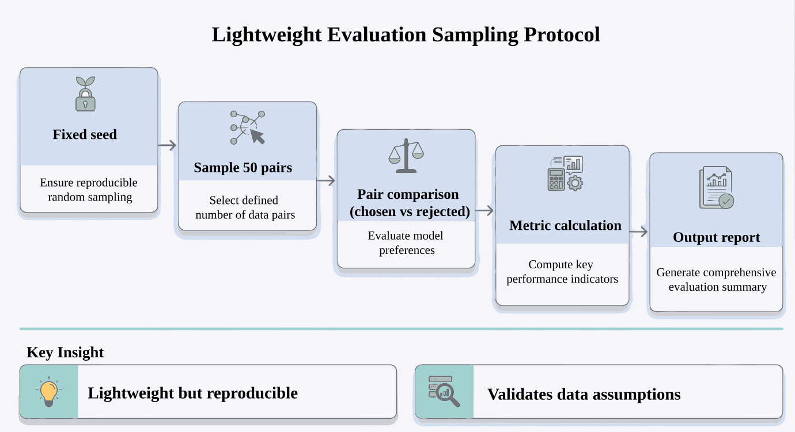
{kind=link}
20. Interpreting Results: Structural Signals from the Current Data Factory¶
Merely listing results has limited value. What matters more is understanding the engineering state reflected by these numbers.
20.1 From 2,577 to 7,737: The Factory Has Expansion Capability¶
This demonstrates that the project has achieved expansion from knowledge seeds to multi-task supervised data, rather than remaining at the stage of "organizing regulatory texts."
20.2 Three Balanced Task Types: The Task Framework Is Stable¶
If one task type far outnumbers the others, it usually signals an imbalance in the template system or sampling logic. The fact that all three task counts are perfectly aligned indicates that the task distribution layer has achieved a high degree of controllability.
20.3 Uneven Domain Distribution: The Next Phase Should Focus on Coverage, Not Volume¶
The primary challenge is no longer "do we have samples" but "are the samples evenly distributed." This is more important than simply continuing to accumulate data.
20.4 Preference, QA, and Lightweight Downstream Validation Together: The Project Is Moving from "Can Answer" to "Answers More Reliably"¶
Without primary SFT alone, it is difficult to prove that the model has learned better legal behavioral patterns. Without preference pairs but no validation, it is difficult to prove that preference construction is actually working. The newly added 50-sample lightweight downstream validation provides direct posterior evidence for both preferences and QA: chosen and rejected have been clearly separated on quality, citation, and safety dimensions.
In other words, the current project is beginning to exhibit a more mature data engineering characteristic:
It not only generates training samples, but can also demonstrate through minimal validation "which samples are worth training on."
20.5 Manual Review Cost Is Now Visible: Automation and Collaboration Optimization Must Be Considered Going Forward¶
The 193.28 hours of manual review labor already represents a significant cost for a small-scale demonstration project. Without recognizing this, it is easy to assume that "generating more legal data just means spending a bit more on API calls." In reality, what is truly expensive is typically the subsequent review and rework.
20.6 What This Addition Changes¶
The newly added lightweight downstream validation fills in the piece on "how to judge whether the data design is effective."
As a result, this chapter is no longer merely a "procedural description of a legal SFT data factory," but forms a more complete engineering closed loop:
- Goals and boundaries;
- Data pipeline and task design;
- QA, preferences, and risk control;
- Training interfaces and inspection closed loop;
- And minimal reproducible downstream validation to support the earlier design judgments.
21. Quality Baseline: Usability Standards for Legal SFT Data¶
The quality baseline here does not pursue an abstract perfect score; it explicitly defines: what data is ready to enter training, and what data must continue through rework.
Projects of this type need to establish at least four baselines.
21.1 Correctness Baseline¶
A response must not manifestly contradict the meaning of the seed regulation, must not introduce key conclusions out of thin air, and must not omit applicability conditions to a degree that materially affects the conclusion.
21.2 Expression Baseline¶
A response should be clear, complete, and unambiguous. Even legal terminology should be made as readable as possible to non-specialist users rather than mechanically copying statutory text.
21.3 Format Baseline¶
Samples of the same task type should follow a consistent output skeleton. For example, case analysis tasks should generally include disputed issues, applicable rules, analysis, and conclusion — rather than sometimes appearing as a single paragraph and other times as a collection of fragments.
21.4 Risk Baseline¶
High-risk questions must reflect boundary-awareness. When evidence is insufficient, facts are incomplete, or a question clearly approaches an individual case opinion, the response should preserve cautious expression or trigger a refusal template, rather than forcing a definitive judgment.
21.5 Baselines vs. Aggregate Scores¶
Compared to the abstract statement "overall quality is good," a quality baseline functions more like a threshold: only what passes the threshold proceeds to the next step; anything that fails must be reworked. This has more engineering value than a single average score.
22. Version Evolution: Version Management for Industry SFT Datasets¶
A mature data factory does not treat the first version of a dataset as the final answer. On the contrary, it should inherently support version evolution.
22.1 V1: Validate the Regulatory Cleaning and Chunking Pipeline First¶
The value of the first version is establishing a stable pipeline from PDF to structured seed. It answers: can the seed layer be reliably produced?
22.2 V2: Introduce the Three Primary Task Types¶
The value of the second version is moving data from "knowledge fragments" to "supervised samples." This version addresses task taxonomy and distribution control.
22.3 V3: Add Preference Pairs and Review Records¶
The value of the third version is enabling samples to train not only "correct responses" but "better responses," and making quality history traceable.
22.4 V4: Add Risk Refusal Samples and Deployment Boundaries¶
The value of the fourth version is modeling high-risk behavior separately, giving the factory a basic compliance and safety awareness capability.
22.5 The Documentation Value of Version Evolution¶
It demonstrates very clearly that: a data factory does not emerge fully formed all at once; each version has its own core objective; not all problems need to be solved in the first version; and the trigger condition for a version upgrade should come from real problems, not abstract perfectionism.
Figure P02-18 illustrates the corresponding workflow or structure.
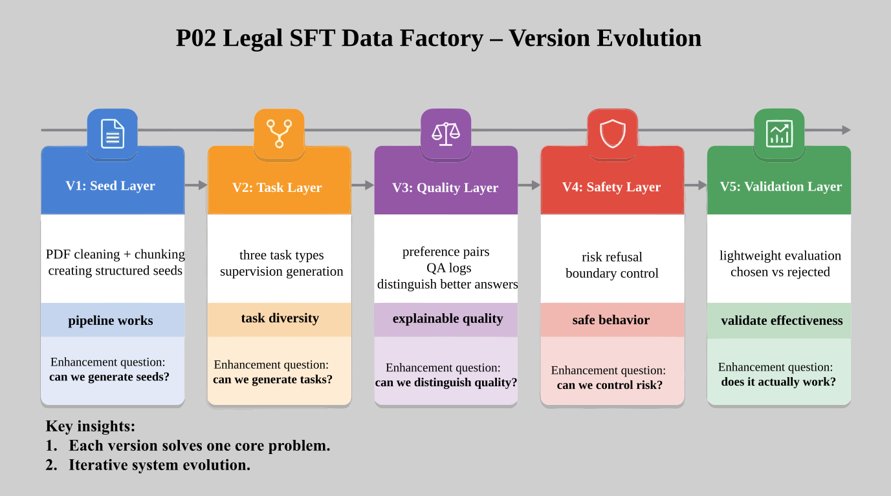
{kind=link}
23. Cost Optimization: Primary Cost Drivers in Legal Data¶
When teams work on large language model data projects, the first cost that comes to mind is typically the model API cost. In legal SFT, however, what is truly expensive is usually not generation, but rather:
- Manual review
- Error rework
- Escalation handling for high-risk samples
- Version regression inspection
23.1 Cost Lessons from the Current Project¶
The manual review labor in the current project has already reached 193.28 hours — a figure that serves as a compelling reminder: industry data factories are never just a matter of "running the model a bit more," but of "how to prevent human-machine collaboration from spiraling out of control."
23.2 Which Stages Deserve Priority Automation¶
In legal contexts, what typically deserves priority automation is not final arbitration, but the mechanical filtering that precedes it, such as:
- Discarding format-noncompliant samples;
- Pre-reviewing low-risk template samples;
- Rule-based interception of obviously out-of-bounds expressions;
- Clustering review records by error type.
23.3 The Necessity of Cost Analysis¶
A project section should not only demonstrate "the method is viable," but also articulate the input-output relationship. If a method is theoretically sound but bears unacceptable labor costs in practice, it is not a method that can truly be deployed.
24. Validation Closed Loop: Consistency Checks for the Legal Data Pipeline¶
Whether a project is mature cannot be judged solely by whether output files exist; it also requires a consistency validation.
24.1 The Role of Inspection Scripts¶
Industry data projects are prone to the problem of "each part looks correct, but the whole is broken." For example:
- Code runs, but artifacts are missing files;
- Sample counts look normal, but there is leakage between train and val;
- Metrics are written as passing, but the report references old numbers;
- Preference pair count does not match primary sample count;
- Smoke tests do not represent the actual training format.
24.2 Current Project Validation Status¶
The project inspection results are:
- Total checks: 13
- Passing checks: 13
- Overall status: PASS
Command-level checks cover py_compile, evaluate_factory, and others; data/artifact-level checks cover key items including required_files_exist, seed_count_positive, accepted_count_matches_seed_x_tasks, preference_pairs_cover_accepted, qa_reviews_cover_accepted, and train_val_no_overlap.
24.3 The Engineering Purpose of the Validation Closed Loop¶
It embodies a very important engineering habit: the completion standard for a data project is not "a large number of files were generated," but "code, artifacts, statistics, and reports are mutually consistent."
Figure P02-19 illustrates the corresponding workflow or structure.
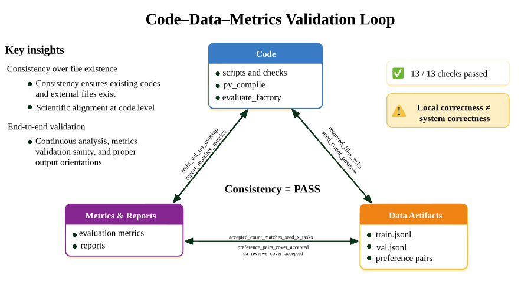
{kind=link}
25. Limitations and Risks: Constraints of the Current Factory¶
A case study that discusses only successes is generally not credible. This is especially true for legal SFT, which is inherently constrained by data sources, review costs, and risk boundaries.
25.1 Uneven Legal Domain Coverage¶
Current samples are heavily concentrated in a small number of legal domains, which will cause uneven model performance in terms of knowledge breadth. Filling in coverage of long-tail legal domains and high-frequency real business issues is one of the most important priorities for the next phase.
25.2 High Synthesis Ratio¶
Although synthesis is a cost-effective necessity, an excessively high synthesis ratio introduces template register and teacher-bias issues. The model may learn to "answer in the manner of the template" without genuinely mastering diverse user expression patterns.
25.3 Risk Refusal Samples Still Too Few¶
Risk refusal mechanisms have been established, but the sample volume remains small. For genuine deployment scenarios, this is far from sufficient — particularly for individualized legal advice, sensitive disputes, and cases with insufficient evidence for judgment, which require a much richer set of refusal and boundary-preserving samples.
25.4 High QA Cost¶
As sample volume grows, manual review costs will continue to rise. Without introducing more granular pre-review, arbitration, and re-annotation mechanisms into the pipeline, scaling will face significant resistance.
26. Cross-Industry Transfer: The Template Value of the Legal Factory¶
Law is not the only industry requiring vertical-domain SFT, but it is an excellent template. This is because the legal context simultaneously exhibits the following characteristics:
- Highly structured knowledge
- Tightly constrained tasks
- Clear risk boundaries
- Rigid QA requirements
- High human-machine collaboration costs
These same characteristics also exist in taxation, finance, healthcare, and customer service compliance.
26.1 Directly Transferable Design Elements¶
- The cleaning pipeline from unstructured documents to structured seeds;
- The practice of decomposing the task taxonomy first, then scaling;
- The approach of building SFT, preference pairs, and risk refusal in parallel;
- QA protocols, error labels, and rework mechanisms;
- Training packaging and validation closed loops.
26.2 Elements That Cannot Be Directly Replicated¶
- Risk boundaries in legal contexts are not equivalent to medical or financial risk boundaries;
- Statute interpretation tasks may not be primary tasks in other industries;
- Legal document style is not equivalent to customer service or sales style;
- Trigger conditions for high-risk refusal must be rewritten per industry.
26.3 The Transferable Methodology Chain¶
What is truly transferable is not any specific prompt, but this methodology chain:
Identify authoritative seeds → perform structured chunking → design the task taxonomy → apply controlled synthesis for expansion → establish QA and preferences → model risk boundaries separately → apply training packaging and consistency validation.
Figure P02-20 illustrates the corresponding workflow or structure.
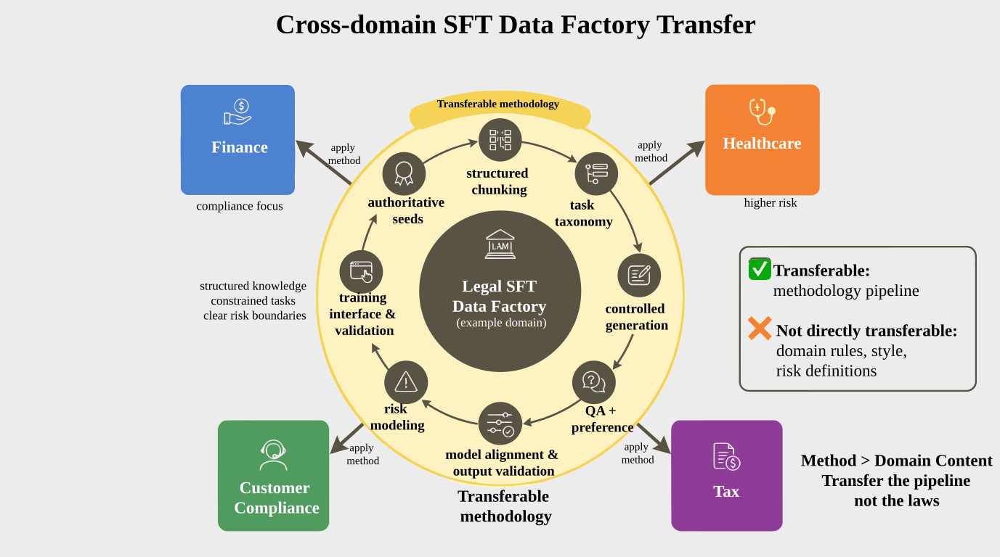
{kind=link}
27. Primary Deliverables Checklist¶
The primary deliverables are listed below.
27.1 Seed and Processing Intermediate Artifacts¶
data/processed/raw_chunks.jsonldata/processed/legal_seed_dataset.jsonldata/processed/instruction_taxonomy.json
27.2 Primary Supervised and Auxiliary Supervised Artifacts¶
data/processed/domain_expert_sft.jsonldata/processed/synthetic_candidates_rejected.jsonldata/processed/legal_preference_pairs.jsonldata/processed/legal_qa_review.jsonldata/processed/legal_risk_refusal_sft.jsonldata/processed/legal_risk_register.jsonl
27.3 Training Interface Artifacts¶
data/training/final_sft_dataset.jsonldata/training/train.jsonldata/training/val.jsonldata/training/smoke_test.jsonldata/training/training_manifest.json
27.4 Report and Validation Artifacts¶
data/reports/p2_report.mddata/reports/p2_metrics.jsondata/reports/p2_test_results.json
Enumerating these deliverables is not merely to present a checklist, but to demonstrate that the result of an industry SFT factory is not a single training set file but a group of mutually related data assets.
28. Methodological Retrospective: Organizing Generation into a Factory¶
Looking back at the entire project, its true achievement is not "getting the model to generate a few more legal Q&A pairs," but rather:
- How to extract usable knowledge from authoritative yet messy PDFs;
- How to decompose that knowledge into different types of supervisory tasks;
- How to keep the generation process controlled rather than expanding arbitrarily;
- How to turn model behavioral boundaries into data through preference pairs and risk refusal;
- How to incorporate QA, cost, versioning, and validation closed loops together into the factory design.
This is also the central message this chapter most wants to convey:
In high-expertise industries, the goal of SFT data engineering is never simply "produce more samples," but to establish a pipeline capable of continuously and reliably producing high-quality supervised assets.
Law is only one representative scenario for this methodology. Once the pipeline — from seeds to supervision, from generation to quality inspection, from samples to deployment interfaces — is mastered, a team has acquired the fundamental methodological foundation for building data factories in other industries.
Special Topic: Publication Gates for Legal SFT Data¶
One of the most significant differences between a legal-domain data factory and a general Q&A data factory is that legal data inherently bears a higher cost of error. For general Q&A, a suboptimal answer may only degrade user experience; for legal Q&A, erroneous supervisory signals can directly propagate into risk advice, refusal boundaries, and professional credibility. Accordingly, projects of the P02 type require clearly defined gate conditions before entering version release.
I. Pre-Release Review Must Cover Both Content Risk and Engineering Risk¶
Legal SFT data cannot be evaluated solely on "is the volume sufficient" or "are the formats complete." It also requires simultaneous assessment of:
- Whether statute citations, case summaries, and risk notices contain obvious errors or outdated expressions;
- Whether refusal samples and high-risk consultation samples cover the critical boundaries;
- Whether preference pairs and QA records genuinely support the conclusions in the current version;
- Whether training interfaces, manifests, and test results are consistent with the version artifacts.
In other words, the release threshold for a version of legal data is inherently higher than for ordinary data, because it must pass both a content credibility check and an engineering consistency check.
II. The Value of Gates Lies in Making "Caution" a System Property¶
Many teams conducting industry data work leave caution for late-stage human review. A more robust approach is to move caution upstream into release gates. Once gates are written down in a structured form, the team gradually develops a stable habit: not "release first and explain later," but "first confirm risk boundaries, supervised assets, and validation evidence, then decide whether this version enters training and presentation." This institutionalized caution is precisely the long-term capability most worth preserving in industry SFT data.
Chapter Summary¶
This chapter presented a legal-domain expert SFT data factory for turning regulations, case law, and legal Q&A materials into traceable domain-specific SFT assets. The project ties task definition, data boundaries, architecture choices, sample schemas, acceptance criteria, and reproducibility resources into one auditable pipeline.
Its boundary is limited to publicly available or licensed legal texts. It does not cover real legal consultation liability or production-grade case management systems. For larger, riskier, or more tightly regulated deployments, teams should reassess sources, permissions, manual review ratios, operating costs, and rollback plans.
As part of Part XIV, this chapter corresponds to the project-level validation of the methods introduced earlier in the book. Readers may use this case together with the data recipes from Part XIII, the platform governance chapters from earlier sections, and the checklists in the appendix to form a closed loop from methodological understanding to engineering delivery.
References¶
Raffel C, Shazeer N, Roberts A, Lee K, Narang S, Matena M, Zhou Y, Li W, Liu P J (2020) Exploring the Limits of Transfer Learning with a Unified Text-to-Text Transformer. JMLR, 21(140), 1-67.
Hugging Face (2026) Datasets Documentation. https://huggingface.co/docs/datasets/.
Ray Project (2026) Ray Data Documentation. https://docs.ray.io/en/latest/data/data.html.
MLflow Authors (2026) MLflow Documentation. https://mlflow.org/docs/latest/.
Great Expectations Contributors (2026) Great Expectations Documentation. https://docs.greatexpectations.io/.